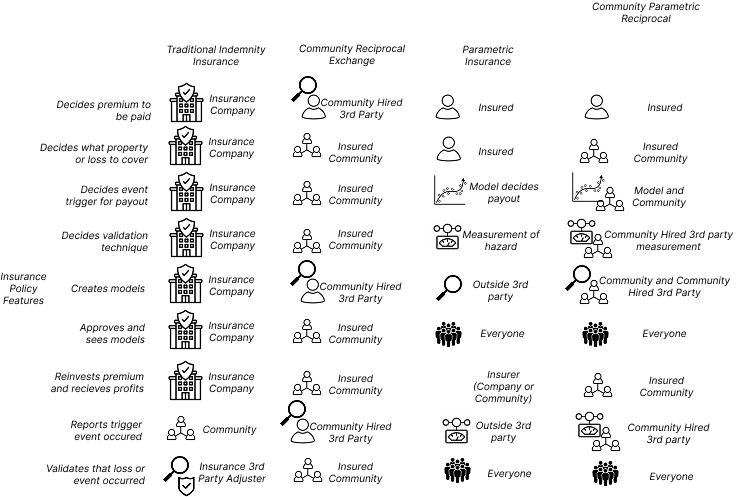
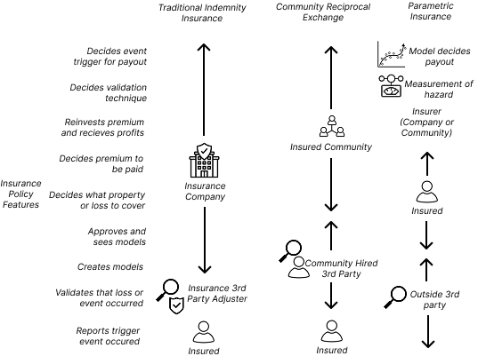

Parametric Reciprocal Insurance Design Owners
The goal of this figure is to explain the ownership of insurance design.

Overview and Design Goal
This design is focused on explaining the reason why we are focused on Parametric Insurance and Reciprocal Insurance: because it gives more power and control to different parties to design what they want out of an insurance product.
Design Challenge
Parametric insurance is fundamentally different from traditional insurance, which can create confusion for potential customers. The challenge was to design an experience that clearly communicates how parametric insurance and reciprocal insurance can give people more flexibility and control.
Development of the Visual
One of the key components to any visual is the iteration it takes to get to the final result, below I have included other prior versions of the same graphic so you can better understand what the process looks like to getting to an end product.
